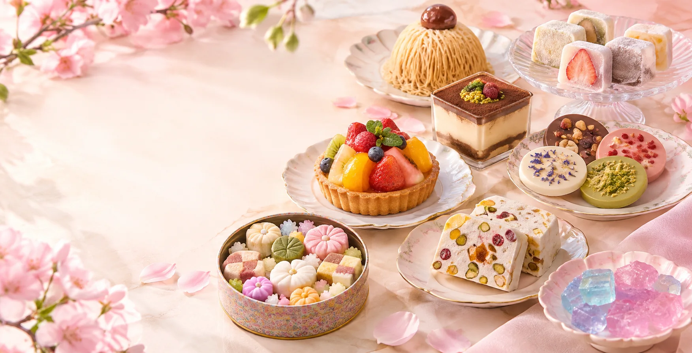
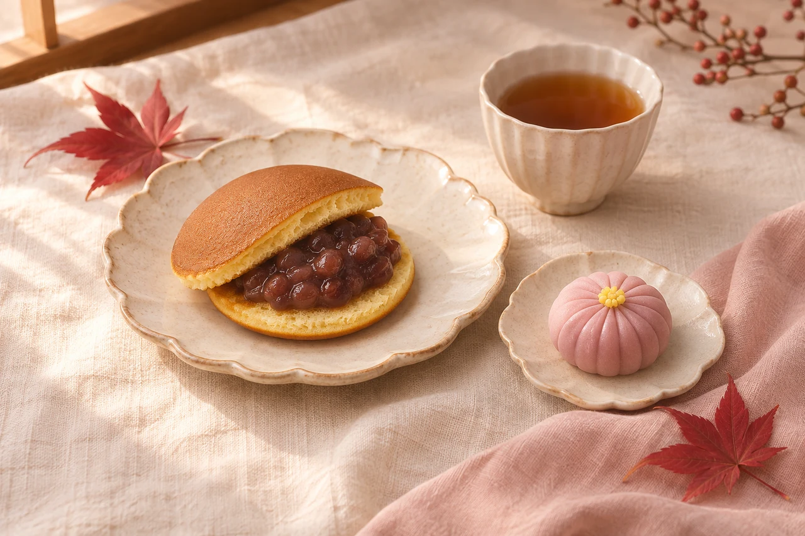

メイン画像はイメージです。
カテゴリーから選ぶ

映えるスイーツ ↗
見た目に恋する、10のお菓子。
10のお菓子
キュートなお菓子 ↗
かわいい、を贈る。
10のお菓子
ギフトスイーツ ↗
手土産やお祝いに、贈りたい10品。
10のお菓子
和菓子・和スイーツ ↗
日本茶と、甘いひと息。
10のお菓子
チョコレート菓子 ↗
苺の断面、紅茶の香り、ひと粒の口どけ。
10のお菓子季節限定・旬のスイーツ ↗
2026年 秋冬のお菓子特集
栗・柚子・クリスマスなど、今の季節に楽しみたい10品。
ひとりで楽しむご褒美おやつ ↗
今日は、自分のためにおやつを選ぶ。
10のお菓子
缶までかわいいお菓子 ↗
ふたを開ける前から、うれしくなる。
10のお菓子カテゴリー画像はイメージです。
シーンから選ぶ

今日のおやつ、どんな気分？
温かいお茶と、
あんこのおやつ
肌寒い日は、ほうじ茶を淹れて、あんこのおやつをひとつ。香ばしいお茶には、ふんわりしたどら焼きを。緑茶を淹れるなら、花の形をした練り切りを小皿にのせて。お茶からおやつを選んでみるのも、楽しいものです。
和菓子・和スイーツを眺める
商品名や素材で探す
 栗りん栗千本（黄金）
栗りん栗千本（黄金） 宝月堂MOCHI cube
宝月堂MOCHI cube 菓匠もりん凛菓てぃらみす
菓匠もりん凛菓てぃらみす ショコラブティック レクラ惑星の輝き
ショコラブティック レクラ惑星の輝き するがフルーツ大福 6個入
するがフルーツ大福 6個入 100PINE宝石のようなカッサータ シチリアーナ
100PINE宝石のようなカッサータ シチリアーナ フレッシュタルトのお店 STYLEみにたると 9種9個セット
フレッシュタルトのお店 STYLEみにたると 9種9個セット 銀座千疋屋銀座タルト（フルーツ）
銀座千疋屋銀座タルト（フルーツ） 銀座菊廼舎冨貴寄 青丸缶
銀座菊廼舎冨貴寄 青丸缶 R.L（エール・エル）ワッフルケーキ 10個
R.L（エール・エル）ワッフルケーキ 10個 マシュマロ キッチン夢の3匹セットマシュマロ
マシュマロ キッチン夢の3匹セットマシュマロ お菓子処ひろせ選べる どうぶつまんじゅう
お菓子処ひろせ選べる どうぶつまんじゅう カファレルきのこポット 赤
カファレルきのこポット 赤 花えちぜんエディブルフラワーロリポップ
花えちぜんエディブルフラワーロリポップ 伊藤久右衛門抹茶パフェアイスバー
伊藤久右衛門抹茶パフェアイスバー カタヌキヤマフラーパンダバウム 3個セット
カタヌキヤマフラーパンダバウム 3個セット ヨックモッククリスマス シガール
ヨックモッククリスマス シガール ロイズ生チョコレート［オーレ］ウインターパッケージ
ロイズ生チョコレート［オーレ］ウインターパッケージ とらや干支パッケージ小形羊羹 10本入
とらや干支パッケージ小形羊羹 10本入 神戸フランツ神戸魔法の壷プリン 4個入
神戸フランツ神戸魔法の壷プリン 4個入 銀座ウエストドライケーキ DC-AN 11袋入
銀座ウエストドライケーキ DC-AN 11袋入 鎌倉紅谷クルミッ子 8個入
鎌倉紅谷クルミッ子 8個入 資生堂パーラーラ・ガナサンド 8個入
資生堂パーラーラ・ガナサンド 8個入 メゾンデュミエルマカダミア キャラメルサンド 5個入
メゾンデュミエルマカダミア キャラメルサンド 5個入 パティスリー キハチアソートBOX M（手提げ付き）
パティスリー キハチアソートBOX M（手提げ付き） PRESS BUTTER SANDバターサンド〈あまおう苺〉9個入
PRESS BUTTER SANDバターサンド〈あまおう苺〉9個入 祇園辻利つじりの里・ぎおんの里 各15本
祇園辻利つじりの里・ぎおんの里 各15本 バターバトラーバターガレット 9個入
バターバトラーバターガレット 9個入 神戸風月堂ゴーフル 15S 缶入り12枚
神戸風月堂ゴーフル 15S 缶入り12枚 風味絶佳.山陰四季の十二撰 ひとくち上生菓子詰合せ
風味絶佳.山陰四季の十二撰 ひとくち上生菓子詰合せ 京みずは本わらび餅 420g
京みずは本わらび餅 420g 京都祇園 仁々木祇園ぽっちり 6個入
京都祇園 仁々木祇園ぽっちり 6個入 叶 匠壽庵あも 1本入
叶 匠壽庵あも 1本入 茜丸おすすめどらやきセット 10個入りA
茜丸おすすめどらやきセット 10個入りA 小布施堂栗鹿ノ子ミニ 3個
小布施堂栗鹿ノ子ミニ 3個 如水庵筑紫もち 6個
如水庵筑紫もち 6個 榮太樓總本鋪あんみつ 6個入
榮太樓總本鋪あんみつ 6個入 いと重菓舗埋れ木 6個入
いと重菓舗埋れ木 6個入 彩雲堂若草 6個入
彩雲堂若草 6個入 六花亭ストロベリーチョコ ホワイト 130gバニラビーンズショーコラ 4個入
六花亭ストロベリーチョコ ホワイト 130gバニラビーンズショーコラ 4個入 ルタオロイヤルモンターニュ 9個入アントワーヌ・カレームオランジェット 箱入り100gデメルソリッドチョコ猫ラベル ミルク 105gル コキヤージュテリーヌ ドゥ ショコラ 1本資生堂パーラーラ・ガナシュ 12個入
ルタオロイヤルモンターニュ 9個入アントワーヌ・カレームオランジェット 箱入り100gデメルソリッドチョコ猫ラベル ミルク 105gル コキヤージュテリーヌ ドゥ ショコラ 1本資生堂パーラーラ・ガナシュ 12個入 サロンドロワイヤルキャンディコートピーカンナッツチョコレート 360gロイズポテトチップチョコレート オリジナル 190gリンツリンドール テイスティングセット 15種16個入グラン菓樹シュトーレン 小サイズ栗のわかやま宮ゆず 6個セット津軽ゆめりんごファームアップルパイ・アソート 6個入良平堂栗福柿と栗きんとん 10個セットおいもやクリスマスのクグロフ 3号DADACAクリスマスイチゴ生デコレーションケーキ 4号神戸風月堂クリスマス ゴーフルデュオ・グーテ D24People Treeフェアトレードチョコ カラメルクリスプ 50gガトーフェスタ ハラダグーテ・デ・ロワ ホワイトチョコレート W3 13枚入伊藤農園ピュアフルーツ寒天ジュレ 90g×8個
サロンドロワイヤルキャンディコートピーカンナッツチョコレート 360gロイズポテトチップチョコレート オリジナル 190gリンツリンドール テイスティングセット 15種16個入グラン菓樹シュトーレン 小サイズ栗のわかやま宮ゆず 6個セット津軽ゆめりんごファームアップルパイ・アソート 6個入良平堂栗福柿と栗きんとん 10個セットおいもやクリスマスのクグロフ 3号DADACAクリスマスイチゴ生デコレーションケーキ 4号神戸風月堂クリスマス ゴーフルデュオ・グーテ D24People Treeフェアトレードチョコ カラメルクリスプ 50gガトーフェスタ ハラダグーテ・デ・ロワ ホワイトチョコレート W3 13枚入伊藤農園ピュアフルーツ寒天ジュレ 90g×8個 神戸フランツ神戸半熟チーズケーキ・プレーン 5個入
神戸フランツ神戸半熟チーズケーキ・プレーン 5個入 バターバトラーバターフィナンシェ 4個入
バターバトラーバターフィナンシェ 4個入 たねやふくみ天平 6個入
たねやふくみ天平 6個入 マーロウ北海道フレッシュクリームプリン 3個セット
マーロウ北海道フレッシュクリームプリン 3個セット 伊藤久右衛門宇治ほうじ茶生チョコレート 16粒
伊藤久右衛門宇治ほうじ茶生チョコレート 16粒 ふみこ農園わかやまポンチ 4本セット
ふみこ農園わかやまポンチ 4本セット 芋屋長兵衛熊本いきなり団子 5種・各1個
芋屋長兵衛熊本いきなり団子 5種・各1個 ハンデルスベーゲンカップアイス 6個セット
ハンデルスベーゲンカップアイス 6個セット ねんりん家マウントバーム しっかり芽 1本入
ねんりん家マウントバーム しっかり芽 1本入 芋國屋干し芋「星はるか」100g×3袋
芋國屋干し芋「星はるか」100g×3袋 洋菓子のプルミエールビジューサブレ 12枚
洋菓子のプルミエールビジューサブレ 12枚 泉屋東京店ねこ缶 クッキーがつなぐ輪 6種18枚
泉屋東京店ねこ缶 クッキーがつなぐ輪 6種18枚 資生堂パーラー花椿ビスケット ペールパープル缶 24枚
資生堂パーラー花椿ビスケット ペールパープル缶 24枚 アトリエうかいフールセック・プティ缶 45g
アトリエうかいフールセック・プティ缶 45g サブレミシェルヴォヤージュサブレ パリ 16枚
サブレミシェルヴォヤージュサブレ パリ 16枚 ウォーカースコッティドッグ テリア2匹缶 220g
ウォーカースコッティドッグ テリア2匹缶 220g ラ・トリニテーヌロイヤルキャッツ 14904
ラ・トリニテーヌロイヤルキャッツ 14904 オンクルアンシドラジェ オーバルブルー缶 41g
オンクルアンシドラジェ オーバルブルー缶 41g 榮太樓總本鋪東京名所缶 梅ぼ志飴 90g
榮太樓總本鋪東京名所缶 梅ぼ志飴 90g 宇治園 星果庵金平糖「細細」35g
宇治園 星果庵金平糖「細細」35g広告を含みます 商品画像・購入リンクには、アフィリエイト広告を使用しています。